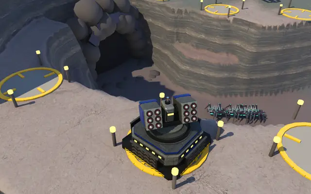
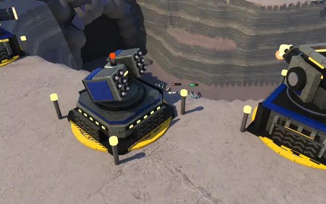
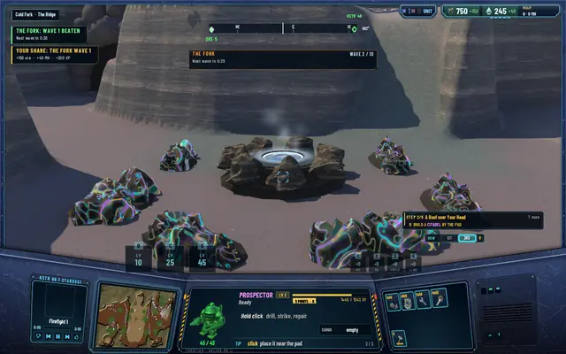
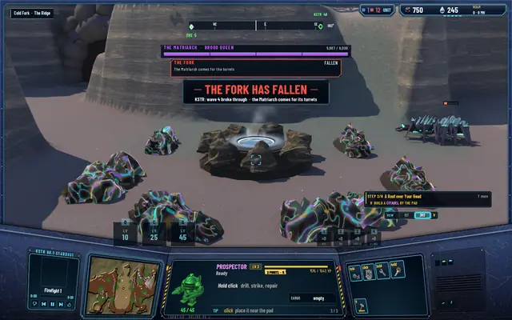
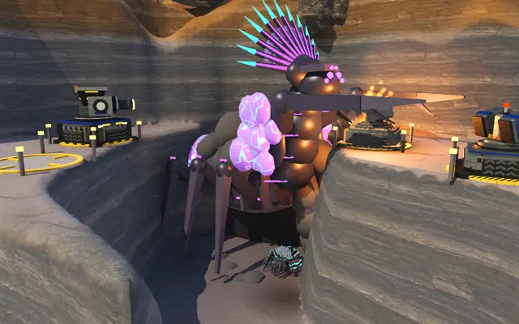
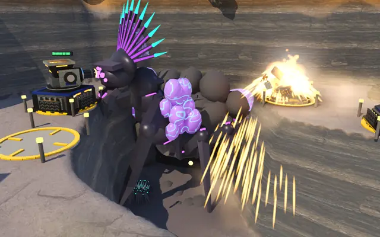
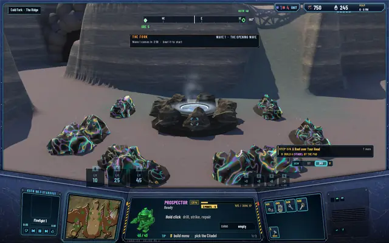
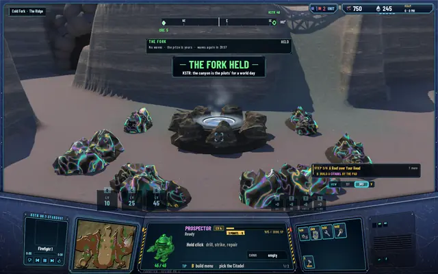
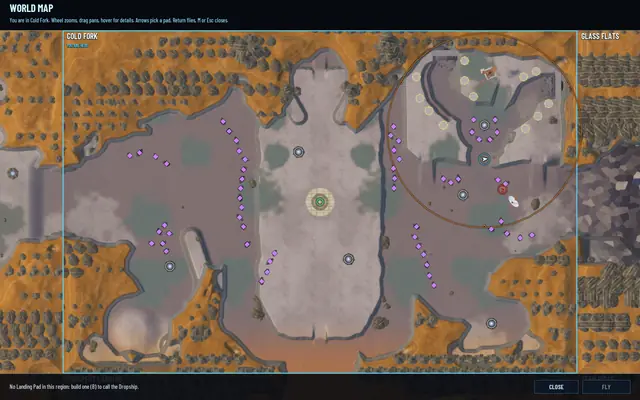

Holding The Fork: ten waves, and the Matriarch if you fail
This was my idea for the canyons: tower defence inside the world. The Fork was cut earlier today; now it plays. The Brood comes down its arms in waves, the pilots hold the rims with their guns, and if a wave gets through, the queen comes to tear the guns down.

The opening wave
While a pilot is in Cold Fork or next to it, the opening wave comes every 3 minutes: four Shardlings down one arm, taking the other arm the next time. It repeats until the pilots beat it, with turrets or with their own torches, and losing it costs nothing. Beating it starts the game.
Ten waves
Waves 2 to 10 come one at a time, with a 30-second countdown between them. From wave 3 they use both arms. Gloamwings arrive at wave 4, which is what the AA towers are for. Waves 5 and 10 are the mini-bosses: hoards of Lodebacks, heavily escorted, going straight for the ore. Wave 10 is 34 bugs.
| Wave | North arm | East arm | Bugs |
|---|---|---|---|
| 1 | 4 Shardlings, one arm, turning each time | 4 | |
| 2 | 6 Shardlings | 6 | |
| 3 | 5 Shardlings | 5 Shardlings | 10 |
| 4 | 7 Shardlings, 3 Gloamwings | 10 | |
| 5 | 2 Lodebacks, 6 Shardlings | 4 Gloamwings | 12 |
| 6 | 8 Shardlings, 4 Gloamwings | 4 Shardlings | 16 |
| 7 | 7 Shardlings | 7 Shardlings, 1 Lodeback, 3 Shardlings | 18 |
| 8 | 5 Gloamwings | 5 Gloamwings, 8 Shardlings | 18 |
| 9 | 10 Shardlings | 2 Lodebacks, 4 Shardlings, 5 Gloamwings | 21 |
| 10 | 3 Lodebacks, 10 Shardlings, 4 Gloamwings | 3 Lodebacks, 10 Shardlings, 4 Gloamwings | 34 |
A wave is beaten when every bug in it is dead. It breaks through if its bugs carry off 300 ore of the prize, counting what Shardlings gnaw and what Lodebacks haul away in their sacs, or if its time runs out with bugs still on the prize. A Lodeback killed before it gets away gives its ore back.
A panel under the compass shows the wave, the bugs left and the ore taken against the 300 mark. KSTR warns which tunnels a wave is coming from, the map rings the canyon, and the Journal has a line for it. The waves pause when no pilot is near, so the world can run on while you're away without losing turrets to a fight nobody saw.
A game in The Fork

The opening wave, down the north arm.- The wave panel: bugs left, ore taken out of 300.

The rim guns firing.
Wave 1 beaten, the share paid, wave 2 counting down.
Wave 4 broke through: THE FORK HAS FALLEN.
She comes out of the wave's tunnel.
And fells the turrets, nearest first.
The reset: wave 1 again, the prize full.
THE FORK HELD: no waves for a world day.
The canyon ringed on the map.


When a wave gets through
The whole world hears THE FORK HAS FALLEN. The Matriarch comes out of the tunnel that wave came from, with six Shardlings, fells every turret in the canyon, nearest first, and goes home. A felled turret loses its marks. The zone resets to the opening wave with the prize refilled, and the next wave waits 3 minutes so the pilots can rebuild. If someone kills her out there, the turrets she hasn't reached yet stand. If she's already dead and not yet back, she can't come: the zone resets and every turret stays.
When the pilots hold
Beat wave 10 and the whole world hears THE FORK HELD. For a world day, 40 minutes, no waves come and the prize is the pilots' to mine. Then the opening wave starts again.
Every wave beaten pays everyone who fought it, split by the damage each did, turrets they built included, with at least a tenth each. On top of the XP for the kills, wave n pays 200 × n XP, 150 × n ore and 40 × n MH. Wave 10 pays double that, 4,000 XP, 3,000 ore and 800 MH, and a rare blueprint to each fighter.
Changed by the balance pass on 15 October: a wave now pays 80 × n XP, 60 × n ore and 16 × n MH, 0.4 of the figures above; wave 10 still pays double. See the balance post.
One of the worker's pictures was meant to show Gloamwings meeting the AA towers' fire; the fire is there but the Gloamwings aren't in frame, so it isn't in the album.